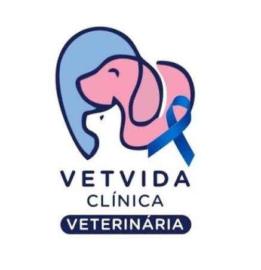

Amigo Vet
Parceira do Lar&Patas na divulgação de animais para adoção.
Conheça as instituições que trabalham conosco para ajudar os animais.
Parceira do Lar&Patas na divulgação de animais para adoção.

Parceira do Lar&Patas na divulgação de animais para adoção.

Parceira do Lar&Patas no apoio às ONGs e aos animais acolhidos.

Parceira do Lar&Patas na divulgação de animais para adoção.

Parceira do Lar&Patas no apoio às ONGs e aos animais acolhidos.

Parceira do Lar&Patas no cuidado veterinário dos animais.
Se você representa uma ONG ou é protetor independente, entre em contato e divulgue seus animais no Lar&Patas.